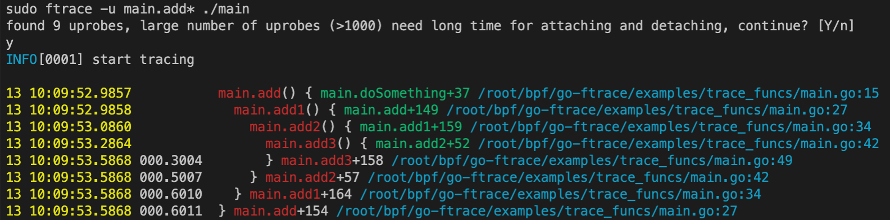
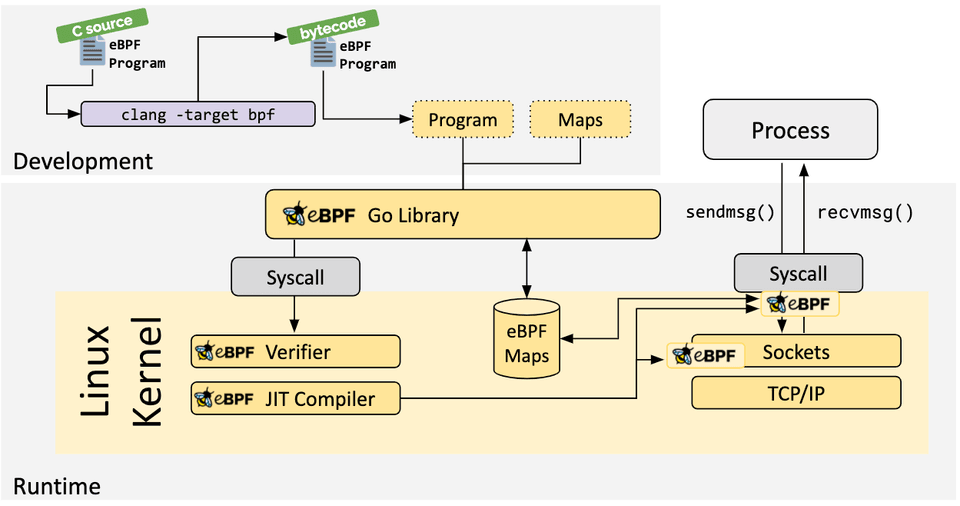

觀測 Go 函式呼叫：go-ftrace 設計實現
前言
不久前在團隊內部做了點eBPF相關的技術分享，過程中介紹了下eBPF的誕生以及在安全、高效能網路、可觀測性、tracing&profiling等領域的實踐以及巨大潛力。另外，在我們專案開發測試過程中，也希望對Go 程式的效能有更好的把控，所以對“上帝視角”的追求是會上癮的，所以我們也探索了下如何基於eBPF技術對Go 程式進行無侵入式地觀測。
分享過程中也演示了下我現階段開發的Go 函式呼叫可觀測性工具。下面是我的分享PPT，感興趣的話可以開啟閱讀：eBPF原理及應用分享，歡迎一起學習交流。
基礎知識
本文重點不在於eBPF掃盲，但是如果有eBPF的基礎的話，再看本文對go-ftrace的介紹會事半功倍。所以如果對eBPF沒什麼瞭解，可以先看看我的分享PPT，或者其他資料，知道個大概。
go-ftrace主要是對Go 程式中的函式呼叫進行跟蹤並統計其耗時資訊，也可以獲取函式呼叫過程中的參數資訊，這樣結合起來，你可以看到不同輸入下的處理耗時的差異。
我們在前一篇文章裡介紹瞭如何使用go-ftrace來跟蹤Go 程式中的某些函式，甚至獲取其執行過程中的函式參數資訊。本文來詳細介紹下go-ftrace的設計實現。
核心視角
自打1993年bpf（berkeley packet filter）技術出現以來，這種CFG-based（control flow graph）的位元組碼指令集+虛擬機器的方案就取代了當時的Tree-based cspf （cmu/standford packet filter）方案，而後幾年在Linux核心中引入了bpf，定位是用來做些tcpdump之類的包過濾分析，在後來Linux核心中引入了kprobe技術，允許使用者在核心模組中透過kprobe跟蹤核心中的一些函式來進行觀測、分析，此後的很多年，bpf技術一直在改進，逐漸演化成一個獨立的eBPF子系統，kprobe、uprobe也可以直接回調eBPF程式，使得整個Linux核心變得可程式設計，而且是安全的。
從跟蹤角度來看，有靜態跟蹤、動態跟蹤兩種方式，靜態跟蹤主要是Linux核心中的一些tracepoints，動態跟蹤主要是藉助kprobe、uprobe技術。如果你閱讀過我之前寫的除錯器的書籍（還未100%完成），你肯定會對“指令patch”技術有所瞭解，其實kprobe、uprobe技術的工作原理也是藉助指令patch。
- 當我們透過系統呼叫bpf通知核心在指令地址pc處新增一個kprobe或者uprobe時，核心會將對應地址處的指令（有可能是多個位元組）用一個一位元組指令Int 3 (0xcc)代替，並在核心資料結構中記錄下原指令內容，以及這個地址處是否是一個kprobe、uprobe。
- 當核心執行到這個指令0xcc時，它會觸發一個異常，進而會執行Linux核心中斷服務程式對其進行處理，核心會檢查這個地址pc處是否有相關的kprobe、uprobe，有的話就跳過去執行，每個kprobe、uprobe實際上包含了prehandler、原指令、posthandler。先執行prehandler，如果返回碼ok則繼續執行原指令，再執行posthandler；如果prehandler返回錯誤碼，那就不往後執行了，透過這個辦法也可以攔截某些系統呼叫，如seccomp-bpf技術。
大致就是這樣的一個過程，仔細深究的話kprobe、uprobe工作起來稍微有點差異。
- 註冊kprobe你只需要告訴核心一個符號即可，比如一個系統呼叫名，核心會自己計算出這個符號對應的指令地址；
- 而註冊一個uprobe的話，舉個例子，go main.main函式，核心是不認識這個符號的，它也不知道main.main的地址該如何計算出來，就需要我們自己先算出來它的地址（實際上是相對於ELF檔案開頭的偏移量），然後再傳給核心；
除錯知識
那麼針對不同的程式語言寫的程式，如何指定一個符號來計算出對應的指令地址呢？這就是挑戰點之一，不過在除錯領域這個問題早就已經解決了，我們可以借鑑下來解決計算指定函式名的指令地址的問題。
DWARF，是一種除錯資訊標準，目前是使用最廣泛的除錯資訊格式。其實有多種除錯資訊格式，但是從對不同程式語言、不同特性、資料編解碼效率的優勢來看，它確實更勝一籌，所以現在主流程式語言生成的除錯資訊基本都是支援DWARF或者優先考慮DWARF。
以Go 語言為例，當我們執行go build編譯一個可執行程式時，以ELF binary檔案為例，編譯器、連結器會生成一些
.[z]debug_
開頭的sections，這些sections中的資料就是除錯資訊。
常見的ELF sections及其儲存的內容如下:
-
.debug_abbrev, 儲存.debug_info中使用的縮寫資訊；
-
.debug_arranges, 儲存一個加速訪問的查詢表，透過記憶體地址查詢對應編譯單元資訊；
-
.debug_frame, 儲存呼叫棧幀資訊；
-
.debug_info, 儲存核心DWARF資料，包含了描述變數、程式碼等的DIEs；
-
.debug_line, 儲存行號表程式 (程式指令由行號表狀態機執行，執行後構建出完整的行號表)
-
.debug_loc, 儲存location描述資訊；
-
.debug_macinfo, 儲存宏相關描述資訊；
-
.debug_pubnames, 儲存一個加速訪問的查詢表，透過名稱查詢全域性物件和函式；
-
.debug_pubtypes, 儲存一個加速訪問的查詢表，透過名稱查詢全域性型別；
-
.debug_ranges, 儲存DIEs中引用的address ranges；
-
.debug_str, 儲存.debug_info中引用的字串表，也是透過偏移量來引用；
-
.debug_types, 儲存描述資料型別相關的DIEs；
以我們的go-ftrace為例，我們想跟蹤某個函式的執行，就得先透過函式名找到對應的地址，怎麼找呢？就是藉助前面提到的這些.debug_ sections。簡單說就是我們可以透過這些不同的除錯資訊構建起對go原始碼層面的全域性查看，並且能在原始碼和記憶體表示（包括指令地址）之間建立起一種對映關係。
這樣我們就可以知道每個函式的第一條指令地址是多少，然後告訴核心分別在函式進入、退出的位置設定uprobes，然後我們為函式進入、返回這兩類uprobes分別編寫對應的eBPF回撥函式。在進入的時候記錄下此時的時間戳，在退出的時候也記錄下時間戳，然後就可以計算耗時資訊。
儘管不瞭解DWARF也不妨礙閱讀理解本文的大意，但如果想能定製化go-ftrace這樣的工具，不瞭解DWARF是基本不可能做到的。如果你想了解這方面內容，建議閱讀DWARF文件，或者閱讀我的電子書golang-debugger-book 裡關於DWARF的相關章節。目前DWARF v5出來不久，v5的特性使用還沒有那麼廣泛，v4應用最廣泛。
設計目標
假定存在如下Go 程式碼，邏輯很簡單，迴圈doSomething。為了演示trace跟蹤時也能跟蹤目標函式內部對其他函式的呼叫，示例程式碼中添加了add、add1、add2、add3，為了展示對函式執行耗時的統計，在不同函式內部加了sleep來模擬各函式的執行耗時。為了避免內聯最佳化對DWARF分析函式位置的影響，我們在上述函式前面加了
//go:noinline
。
ps: 隨著go編譯工具鏈對行內函數生成的DWARF資訊的最佳化，後續應該也可以去掉內聯，現在加上最穩妥。
func main() {
for {
doSomething()
}
}
func doSomething() {
add(1, 2)
...
time.Sleep(time.Second)
}
//go:noinline
func add(a, b int) int {
fmt.Printf("add: %d + %d\n", a, b)
return add1(a, b)
}
//go:noinline
func add1(a, b int) int {
fmt.Printf("add1: %d + %d\n", a, b)
time.Sleep(time.Millisecond * 100)
return add2(a, b)
}
//go:noinline
func add2(a, b int) int {
time.Sleep(time.Millisecond * 200)
return add3(a, b)
}
//go:noinline
func add3(a, b int) int {
fmt.Printf("add3: %d + %d\n", a, b)
time.Sleep(time.Millisecond * 300)
return a + b
}
然後希望執行
ftrace -u main.add* ./main
時，函式呼叫跟蹤及耗時統計可以達到這樣的效果，能展示函式執行進入、退出的時間戳、耗時，函式呼叫發生的位置，甚至函式實參資訊。

實現過程
下面按照程式執行流程，對流程中涉及到的技術細節進行下詳細介紹。
解析啟動參數
為了更方便使用POSIX風格的命令列選項參數（長選項、短選項），這裡還是使用的spf13/cobra來開發這個程式，原作者用的另外一個庫，但是我使用起來感覺不太方便，所以這部分進行了重寫，也方便我後續擴充套件其他功能。
主要參數有這幾個：
// 是否排除vendor/定義的函式
rootCmd.Flags().BoolP("exclude-vendor", "x", true, "exclude vendor")
// 指定要跟蹤的函式名匹配模式
rootCmd.Flags().StringSliceP("uprobe-wildcards", "u", nil, "wildcards for code to add uprobes")
// 將參數-u設定為必填參數
rootCmd.MarkFlagRequired("uprobe-wildcards")
當我們執行命令時就可以像下面這樣使用：
# 跟蹤binary中main包下所有的函式、方法，而且可以多次使用-u指定多個匹配模式
ftrace [-u|--uprobe-wildcards] main.* <binary>
# 也可以指定-x來排除vendor下定義的函式、方法
ftrace -u github.com/* [-x|--exclude-vendor] <binary>
# 也可以自定參數來描述如何獲取指定函式的參數資訊
ftrace -u main.Add <binary> 'main.Add(p1=expr1:type1, p2=expr2:type2)'
spf13/cobra是一個很好用的命令列工具開發框架，感興趣的可以瞭解不再贅述。大致知道為什麼我們選擇它就可以：支援POSIX風格選項解析（長選項、短選項）、方便擴充套件命令、選項、自動生成help資訊、自動生成shell補全指令碼。
匹配函式獲取
以我們指定的
main.*
這個匹配表示式為例，我們如何找到所有匹配的函式名呢？我們是拿不到原始碼資訊的，我們能拿到的只有已經編譯構件號的go二進位程式。其實編譯器、連結器已經生成了一些.symtab, .strtab，我們的函式名就存在於這些section中，並且對於一個Symbol，除了名字，還記錄了這個符號表示的物件型別，比如“函式”。
看下下面的示例程式碼：獲取所有函式命名形如
main.*
的函式。
// 首先開啟一個elf檔案，其中的.symtab, .strtab沒有被stripped
f, err := elf.Open("testdata/helloworld")
// 取出所有的symbols
syms, err := f.Symbols()
var funcs []string
for _, s := range syms {
// 如果不是函式型別跳過
if elf.ST_TYPE(s.Info) == elf.STT_FUNC {
continue
}
// 如果命名不匹配main.*跳過
if !strings.Contains(s.Name, "main.") {
continue
}
// 記錄下函式名
funcs.append(funcs, s.Name)
}
在go-ftrace裡面，為了實現方便組合使用了go-delve/delve下的DWARF相關package，以及標準庫debug/elf，原理和上面是一致的。這樣下來我們就獲得了所有匹配模式
main.*
的待跟蹤函式列表。
函式地址轉換
有了這些帶跟蹤的函式名列表之後，我們希望程式執行時進入、退出函式時能生成一個事件並回調自定義的回撥函式，回撥函數里我們分別統計開始執行時間、介紹執行時間，這樣就能計算出這個函式的耗時資訊。
要想在函式進入、退出時產生回撥特定函式，就要利用到eBPF+uprobe了，我們用eBPF寫uprobe的回撥函式，再透過bpf系統呼叫通知核心將某個uprobe和eBPF程式attach起來之前，我們得先建立uprobe。在建立uprobe之前，我們得先知道每個待跟蹤函式的入口指令的地址，以及返回指令的地址，這裡的地址後面用pc(程式計數器)代替。
ps: 學過組成原理的話，應該瞭解到pc=cs:ip，其實就是下條待執行指令的地址，但是我們這裡用pc代指了函式入口指令地址、返回指令地址。
函式入口新增uprobe
獲得函式入口指令地址，也並不困難，下面是獲取入口指令地址、offset（相對於ELF檔案開始位置）的示例程式碼：
sym, err := elf.ResolveSymbol(funcname)
if err != nil {
return nil, err
}
// 函式入口偏移量
entOffset, err := elf.FuncOffset(funcname)
if err != nil {
return nil, err
}
uprobes = append(uprobes, Uprobe{
Funcname: funcname,
Location: AtEntry,
Address: sym.Value, // 指令地址
AbsOffset: entOffset, // 相對偏移量
RelOffset: 0, // 相對入口指令偏移量，當然是0
})
那
elf.FuncOffset(funcname)
是如何實現的呢？
// 返回函式定義在ELF檔案中的偏移量
func (e *ELF) FuncOffset(name string) (offset uint64, err error) {
sym, err := e.ResolveSymbol(name)
if err != nil {
return
}
section := e.Section(".text")
return sym.Value - section.Addr + section.Offset, nil
}
有幾個地方要說明下：
- symbol.Value：符號表示的物件（變數、型別、函式等）在行程虛擬位址空間中的地址；
- section.Addr：如果不為0表示會被載入到記憶體，它表示該section第一位元組在行程虛擬位址空間中的地址；
- section.Offset：表示該section第一位元組在ELF檔案中的偏移量；
所以
sym.Value - section.Addr + section.Offset
表示該符號在ELF檔案中的偏移量。這可能和我們預期的“虛擬位址pc”有點偏差。或者說，當執行系統bpf系統呼叫設定uprobe時，我們實際傳入的位置資訊：
- 是一個相對於ELF檔案開頭的偏移量呢？
- 還是一個相對於.text section開頭的偏移量呢？
- 還是一個虛擬位址呢？
go-ftrace執行bpf操作是利用了cilium/bpf工程提供的封裝，github.com/cilium/ebpf/link.Uprobe|Uretprobe() 這幾個函式也是允許指定 symbol。那前面獲取這些符號地址有啥作用呢？是這樣的，Uprobe、Uretprobe 只能處理非共享庫、且語言是 C/C++ 之類的場景，如果是共享庫或者是其他語言的，需透過 UprobeOptions{Offset: ...} 來說明 uprobe 位置（ELF 檔案中指令相對於檔案開頭的偏移量）。
所以你看我前面計算了很多AbsOffset偏移量（相對於ELF檔案開頭），最終就是利用這些偏移量來設定的。如果進一步瞭解下cilium使用的系統呼叫perf_event_open，會了解的更清楚。perf_event_open，該系統呼叫允許接受一個perf_event_attr的參數來設定kprobe、uprobe。
$ man 2 perf_event_open
…
kprobe_func, uprobe_path, kprobe_addr, and probe_offset
These fields describe the kprobe/uprobe for dynamic PMUs kprobe and uprobe.
- For kprobe: use kprobe_func and probe_offset, or use kprobe_addr and leave kprobe_func as NULL.
- For uprobe: use uprobe_path and probe_offset.
再看cilium中對此系統呼叫的使用過程，看下它是怎麼設定perf_event_attr參數的：
func pmuProbe(typ probeType, args probeArgs) (*perfEvent, error) {
...
var (
attr unix.PerfEventAttr
sp unsafe.Pointer
)
switch typ {
case kprobeType:
...
case uprobeType:
sp, err = unsafeStringPtr(args.path)
if err != nil {
return nil, err
}
...
attr = unix.PerfEventAttr{
Size: unix.PERF_ATTR_SIZE_VER1,
Type: uint32(et), // PMU event type read from sysfs
Ext1: uint64(uintptr(sp)), // Uprobe path（二進位檔案）
Ext2: args.offset, // Uprobe offset （相對於ELF檔案）
...
}
}
rawFd, err := unix.PerfEventOpen(&attr, args.pid, 0, -1, unix.PERF_FLAG_FD_CLOEXEC)
...
}
透過
man perf_event_open
查看 attr結構體定義，實際上上述程式碼中Ext1、Ext2分別對應uprobe_path和probe_offset，剛好對上。uprobe_path實際上就是我們的二進位程式的路徑資訊，而probe_offset就是要設定uprobe的指令處在ELF檔案中的偏移量資訊。
之後，核心會讀取並解析uprobe_path對應ELF檔案的headers資訊，計算probe_offset處指令對應的uprobe地址，然後註冊uprobe。
ps：不禁要問，核心為什麼不直接要一個邏輯地址來描述uprobe的位置呢？考慮下來可能就是為了一致性、簡單性、可理解性。用邏輯地址可以嗎？實現肯定能實現，但是看到這種參數開發者要去理解地址對映邏輯、載入邏輯，至少會去“仔細”確認這些資訊吧。核心中其他系統呼叫在處理類似場景時可能也是更傾向於使用offset，應該也有一致性的考慮。先知道這個就行了。
函式返回前新增uprobe
函式返回時比較特殊，它可能存在多個返回語句，這個也比較好理解。多個返回語句，也就是多條返回指令，每個返回指令地址處都應該新增uprobe。
// 函式返回指令偏移量
retOffsets, err := elf.FuncRetOffsets(funcname)
for _, retOffset := range retOffsets {
uprobes = append(uprobes, Uprobe{
Funcname: funcname,
Location: AtRet,
//Address:
AbsOffset: retOffset, // 返回指令的偏移量（相對於ELF檔案）
RelOffset: retOffset - entOffset, // 返回指令的偏移量（相對函式入口）
})
}
// FuncRetOffsets returns the offsets of RET instructions of function `name` in ELF file
//
// Note: there may be multiple RET instructions in a function, so we return a slice of offsets
func (e *ELF) FuncRetOffsets(name string) (offsets []uint64, err error) {
insts, _, offset, err := e.FuncInstructions(name)
if err != nil {
return
}
for _, inst := range insts {
if inst.Op == x86asm.RET {
offsets = append(offsets, offset)
}
offset += uint64(inst.Len)
}
return
}
注意到，在設定函式入口的uprobe時，我們是設定了Uprobe.Address欄位的，但是設定函式退出的uprobe時卻沒有，為什麼呢？
- 在註冊uprobe時，確實只需要指令地址相對於ELF檔案的偏移量（前面已解釋過）；
- 在設定函式入口Uprobe.Address，主要是為了用來設定eBPF maps中的配置資訊，如我們跟蹤的某個函式是否需要獲取參數之類的，而這之需要設定函式入口處的uprobe就夠了，函式返回處的uprobe就不需要再計算並設定其地址資訊了。
DWARF中函式的lowpc、highpc的指令地址，這個地址是指令的邏輯地址，上述實現FuncRetOffset(name string)中做了從邏輯地址向ELF檔案開頭的偏移量的轉換。
ps：函式的lowpc實際上是函式被編譯後第一條指令的邏輯地址，highpc是最後一條指令的邏輯地址。函式定義在DWARF中是以DIE（Debugging Information Entry）的形式儲存在.[z]debug_info中的，對於描述函式的DIE，其Tag會表明它是一個TagSubprogram（函式），同時它會包含相關的AttrLowpc、AttrHighpc來描述函式包含的指令集合的邏輯地址範圍。瞭解這寫些就可以了，不再繼續展開。
參數定址規則
如果我們需要獲取函式的參數資訊，該怎麼辦？很簡單，其實只要知道參數在記憶體中的起始地址，以及資料型別資訊就可以了。這樣我們就可以按照指定的資料型別的大小從記憶體讀取一定數量的bytes，然後再將其解析成對應的資料型別即可。
ps：當然這裡的參數也可能是一個暫存器中的立即數，這樣就簡單了很多。
這裡的定址規則，我們可以自己設計一個，比如借鑑下計算機組成原理的有效地址（EA，Effective Address）的定址方式的寫法，這裡我們為了實現起來簡單，又便於理解，自己設計了一種寫法。
// 基本寫法
functionName(argument1=(expr1):type1, argument2=(expr2):type2, argument3=(expr3):type3)
- argument1~3: 這是我們為要捕獲的參數自定義的一個識別符號名
- expr1~3: 這是參數值實際儲存的有效地址，必須先從有效地址處讀取資料，然後才能解析成期望型別（也可能是一個暫存器立即數）
- type1~3: 這是參數值對應的資料型別，
s|u表示整數，c表示字串 s64表示 64 位有符號整數u64表示 64 位無符號整數c64表示共 8 位元組的字串
以這個為例，我們解釋下它的含義：
main.(*Student).String(s.name=(*+0(%ax)):c64, s.name.len=(+8(%ax)):s64, s.age=(+16(%ax)):s64)
其中
main.(*Student).String()
的定義如下：
// Go 程式碼Student定義
type Student {
name string
age int
}
實際上pahole分析出的它的記憶體佈局：
$ ../scripts/offsets.py --bin ./main --expr 'main.Student'
struct main.Student {
struct string name; /* 0 16 */
int age; /* 16 8 */
/* size: 24, cachelines: 1, members: 2 */
/* last cacheline: 24 bytes */
};
對於String()方法，其第一個參數是其接收器型別main.(*Student)，它的起始地址將透過AX暫存器傳遞，在規則中我們使用%ax代表物理暫存器RAX or EAX，然後呢Student.age相對於Student物件起始的偏移量是16位元組，所以規則
s.age=(+16(%ax)):s64
指出了age的有效地址+16(%ax)，以及資料型別s64。規則中的
()
只起到分組、增強可讀性的作用，並不像計算機組成原理中那樣用來取資料（取暫存器或者記憶體單元中的資料）。
類似地，對Student.name我們也可以這樣分析，只不過對於string型別比較特殊：
$ ../scripts/offsets.py --bin ./main --expr 'main.Student->name'
Member(name='name', type='string', is_pointer=False, offset=0)
struct string {
uint8 *str; /* 0 8 */
int len; /* 8 8 */
/* size: 16, cachelines: 1, members: 2 */
/* last cacheline: 16 bytes */
};
string本身就是一個struct來表述的，它底層陣列的起始地址，以及長度資訊。其實main.Student的起始地址就是main.Student.name.str成員的起始地址，但是這裡的str是一個指標，可以理解成它指向一個長度為len的byte陣列。main.Student.name.str成員的起始地址並不是EA，*(main.Student.name.str)才是EA，所以規則裡
s.name=(*+0(%ax)):c64
讀者應該看懂了吧。獲取name字串長度的操作
s.name.len=(+8(%ax)):s64
也不難明白了。
ps：有時候傳參是透過暫存器傳遞的立即數，這種規則就更簡單了，比如
your_arg=(%si):u64
。這裡些的比較簡短，如果你想詳細瞭解，可以閱讀這裡的FetchArgRule 獲取參數的規則。
協程執行過程
OK，讀到這裡的都是技術細節控 :) 現在我們知道怎麼在函式入口、退出時設定uprobe了，也知道怎麼透過定址規則來獲取任意參數的資訊了。我們先把任務做的簡單點，假設我們只統計函式耗時資訊，我們應該怎麼做呢？
func main() {
add()
}
func add() {
add1()
}
上述函式在執行時，我們希望統計成這樣：
timestamp1 main.main { args...
timestamp2 main.add { args...
timestamp3 main.add1 args...
timestamp4 timecost1 } main.add1 end
timestamp5 timecost2 } main.add end
timestamp6 timecost3 } main.main end
要知道，main.add、main.add1 函式可能在任意goroutine中被呼叫，那麼我們彙總上述函式呼叫過程中的耗時時就必須意識到，我們要針對每個goroutine單獨統計它執行過程中的函式棧幀的expand、shrink問題：
- 函式呼叫進入，新建一個棧幀
- 函式呼叫返回、棧幀銷燬
比如我們分析一個函式main.main，我們就會將main.main這個位置作為一個根，在其下發起的新的函式呼叫、返回都伴隨著在根下新建節點、移除節點的過程，當每個節點新建、移除時我們就收集到了一連串的事件（uprobe、uretprobe事件被觸發，對應的時間戳被記錄下來），然後最後連根main.main也返回時，就意味著我們觀測的物件已經執行結束了，我們已經收集全了所有的資訊，現在是時候打印出上述收集到的執行資訊了。
所以，其實我們可以用一個棧（stack）來記錄每個goroutine上的資訊函式呼叫、函式返回的事件資訊，當棧空時就可以列印收集到的執行資訊，並清空這些資訊。後續goroutine仍然有可能再次執行這個函式，這個棧又會增長、縮減、被列印執行資訊，直到這個goroutine退出時，我們就可以從eBPF maps中刪除這個goroutine對應的棧資料結構。
大致實現過程就是這樣的，那很重要的一點就是，我們必須獲取到goroutine的唯一標誌goid，這樣我們才能在eBPF maps中為每個goroutine建立與之關聯的stack。
獲取協程goid
先說事實，goid是儲存在runtime.g這個結構體中的成員，而runtime.g的地址是儲存線上程區域性儲存（Thread Local Storage，TLS）中的。
那麼，如果我們知道TLS在虛擬記憶體空間中的儲存位置，並且知道runtime.g在TLS block中的偏移量資訊，那麼我們就能讀取出runtime.g的地址。如果我們再知道goid相對於包含它的結構體runtime.g的offset，那麼我們也就可以繼續讀取出goid的值。
如何獲取TLS地址
TLS地址在現代處理器中一般是有專門的暫存器來存的，比如FS暫存器。以Linux為例，這個暫存器的資料會儲存在
task_struct->thread (thread_struct) -> fsbase
欄位中：
- 獲取指定任務task_struct在eBPF程式中是很簡單的事情，僅需要呼叫函式
即可；bpf_get_current_task - 然後透過offsetof，我們可以輕易獲取到thread成員相對於task_struct的偏移量，這裡的thread_task是個結構體；
- 然後繼續獲取fsbase相對於thread_task的偏移量，這樣就可以獲取出fsbase的值；
簡言之最終的fsbase相對於task_struct的偏移量就是這樣：
// offset of `task_struct->thread_struct->fsbase`, `fsbase` contains the TLS
// offset. On Linux register `FS` is used to load the TLS base address.
#define fsbase_off (offsetof(struct task_struct, thread) + offsetof(struct thread_struct, fsbase))
然後這樣就可以讀取到TLS的地址了：
__u64 tls_base, g_addr, goid;
struct task_struct *task = (struct task_struct *)bpf_get_current_task();
bpf_probe_read_kernel(&tls_base, sizeof(tls_base), (void *)task + fsbase_off);
如何獲取runtime.g在TLS中偏移量
要想準確獲取runtime.g在TLS block中的offset，還是有一點複雜的，因為這裡牽扯到了不同連結方式、不同平臺的差異性，對於純Go 程式而言就比較簡單，runtime.g相對於TLS塊的偏移量是-8。
ps：您可以閱讀下面程式碼瞭解下在非純 Go等情景下，偏移量是如何計算的。
// FindGOffset returns the runtime.g offset
//
// see: github.com/go-delve/delve/proc/bininfo.go:setGStructOffsetElf,
//
// it summarizes how to get the runtime.g offset:
// This is a bit arcane. Essentially:
// - If the program is pure Go, it can do whatever it wants, and puts the G
// pointer at %fs-8 on 64 bit.
// - %Gs is the index of private storage in GDT on 32 bit, and puts the G
// pointer at -4(tls).
// - Otherwise, Go asks the external linker to place the G pointer by
// emitting runtime.tlsg, a TLS symbol, which is relocated to the chosen
// offset in libc's TLS block.
// - On ARM64 (but really, any architecture other than i386 and x86_64) the
// offset is calculated using runtime.tls_g and the formula is different.
//
// well, this is a bit hard to master all this kind of history.
// but, we can show respect to the contributors.
func (e *ELF) FindGOffset() (offset int64, err error) {
_, symnames, err := e.Symbols()
if err != nil {
return
}
// When external linking, runtime.tlsg stores offsets of TLS base address
// to the thread base address.
tlsg, ok := symnames["runtime.tlsg"]
tls := e.Prog(elf.PT_TLS)
if ok && tls != nil {
// runtime.tlsg is a symbol, its symbol.Value is the offset to the
// beginning of the that TLS block.
//
// FS register is the offsets which points to the end of the TLS block,
// this block's size is memsz long.
//
// so, offsets where runtime.g stored = FS + runtime.tlsg.Value - memsz
memsz := tls.Memsz + (-tls.Vaddr-tls.Memsz)&(tls.Align-1)
return int64(^(memsz) + 1 + tlsg.Value), nil
}
// While inner linking, it's a fixed value -8 ... at least on x86+linux.
return -8, nil
}
這樣，我們就可以進一步讀取到runtime.g的地址資訊：
bpf_probe_read_user(&g_addr, sizeof(g_addr), (void *)(tls_base + CONFIG.g_offset));
獲取goid的偏移量
因為runtime.g的原始碼是公開的，要確定goid的偏移量的話，易如反掌，也可以透過前面介紹的pahole工具自動分析下。假定這個偏移量是goid_offset的話。
最終我們就可以讀取出goid的值：
bpf_probe_read_user(&goid, sizeof(goid), (void *)(g_addr + CONFIG.goid_offset));
有了goid之後，我們就可以用它做eBPF maps中的goroutine的key，來記錄每個協程關聯的一些事件統計資料。
載入BPF程式
前面講了如何獲取函式定義入口的指令地址、返回指令的指令地址相對ELF檔案的偏移量問題。並且也提到了Linux系統呼叫perf_event_open的參數perf_event_attr如何來設定uprobe的位置資訊（uprobe需要透過uprobe_path、probe_offset）。但是在註冊uprobe時，我們不光要指定待跟蹤的位置資訊，還需要指定當程式執行到這個位置時，應該如何反應。所以在本小節之後我們還要描述下自定義的uprobe的回撥函式的內容，也就是我們eBPF程式。
這裡我們先不管eBPF程式怎麼寫，先描述下eBPF程式的載入，載入過程歸根究底是利用了系統呼叫bpf(2)來完成，此時只是提交給核心一個eBPF程式，該程式已經透過
clang -target=bpf
編譯成了bpf位元組碼指令，提交給核心後eBPF子系統中的驗證器開始工作，它會檢查該eBPF程式是否符合要求，比如是否很複雜、是否有無窮或者次數很多的迴圈、是否有記憶體越界等行為，只有符合要求的程式才會透過驗證並載入。eBPF子系統還會呼叫JIT編譯期將bpf位元組碼指令進一步轉換為native指令，使其執行效率接近原生指令效率。
接下來，我們就看下go-ftrace裡面是如何載入eBPF程式的，它沒有直接呼叫bpf系統呼叫，而是使用了cilium/bpf中對該系統呼叫的封裝。
// load bpf programme and setup bpf programme config
if err = t.bpf.Load(uprobes, bpf.LoadOptions{
GoidOffset: goidOffset,
GOffset: gOffset,
}); err != nil {
return
}
這個過程中具體做了哪些事情呢？
// Load 載入這個bpf程式
func (b *BPF) Load(uprobes []uprobe.Uprobe, opts LoadOptions) (err error) {
// 載入bpf程式，這部分是用C語言寫的，然後clang編譯成-target bpf的位元組碼程式，副檔名為*.o，
// 這個*.o檔案也是ELF檔案頭的
spec, err := LoadGoftrace()
if err != nil {
return err
}
b.objs = &GoftraceObjects{}
...
// 是否要獲取參數：遍歷所有uprobes，檢查有沒有要獲取參數的，有就更新為true
fetchArgs := false
// 返回一個bpf配置，並將cfg寫入eBPF maps，作為執行在核心態的bpf程式要讀取的配置
cfg := b.BpfConfig(fetchArgs, opts.GoidOffset, opts.GOffset)
if err = spec.RewriteConstants(map[string]interface{}{"CONFIG": cfg}); err != nil {
return
}
// 繼續載入*.o中的bpf程式和maps
if err = spec.LoadAndAssign(b.objs, &ebpf.CollectionOptions{
Programs: ebpf.ProgramOptions{LogSize: ebpf.DefaultVerifierLogSize * 4},
}); err != nil {
return
}
// 遍歷所有uprobes中的參數獲取規則，將其寫入bpf maps配置arg_rules_map中，
// - key就是函式入口地址，
// - val就是該函式的多個參數獲取的規則描述配置
for _, uprobe := range uprobes {
if len(uprobe.FetchArgs) > 0 {
if err = b.setArgRules(uprobe.Address, uprobe.FetchArgs); err != nil {
return
}
}
...
}
return
}
主要是這裡的
LoadAndAssign
函式，我們用C寫的bpf程式部分是執行在核心態中的，它被clang編譯為-target bpf的位元組碼程式，在C程式中透過一些特定的編譯器擴充套件允許指定編譯器、連結器將特定的函式編譯後寫入特定的ELF section中。
SEC("uprobe/ent")
int ent(struct pt_regs *ctx)
{
__u32 key = 0;
struct event *e = bpf_map_lookup_elem(&event_stack, &key);
if (!e)
return 0;
__builtin_memset(e, 0, sizeof(*e));
...
}
SEC("uprobe/ret")
int ret(struct pt_regs *ctx)
{
__u32 key = 0;
struct event *e = bpf_map_lookup_elem(&event_stack, &key);
if (!e)
return 0;
__builtin_memset(e, 0, sizeof(*e));
...
}
#define SEC(name) \
_Pragma("GCC diagnostic push") \
_Pragma("GCC diagnostic ignored \"-Wignored-attributes\"") \
__attribute__((section(name), used)) \
_Pragma("GCC diagnostic pop")
比如上面的程式在被clang -target bpf編譯為*.o檔案後，嘗試用readelf讀取sections定義：
$ readelf -S goftrace_bpfel_x86.o
There are 31 section headers, starting at offset 0xc0a90:
Section Headers:
[Nr] Name Type Address Offset
Size EntSize Flags Link Info Align
...
[ 3] uprobe/ent PROGBITS 0000000000000000 00000040
0000000000000c48 0000000000000000 AX 0 0 8
[ 5] uprobe/ret PROGBITS 0000000000000000 00000c88
0000000000000200 0000000000000000 AX 0 0 8
...
Load過程中就會遍歷並記錄下上述特殊的sections的內容，每一個section的內容都是一個*ebpf.Program，也就是SEC(name)這裡的name函式期望的eBPF回撥程式。
ps：除了載入這些bpf程式到核心，它也會載入定義的一些bpf maps資料結構，如用到的hash、queue、stack、array，這些資料結構可能會用來充當配置，也可能用來儲存執行結果，實現使用者態、核心態的資料互動。這些maps資料結構定義，編譯後會統一放在maps這個ELF section中。
以函式參數的獲取規則為例，arg_rules_map 是一個hash，kv儲存結構，k就是函式入口地址，v就是對一個函式的參數獲取規則。arg_rules_map透過SEC(“maps”)來修飾，編譯後會記錄在ELF maps section中，這裡的載入邏輯就是告訴核心給建立一個這樣的結構備用。然後透過
b.setArgRules(uprobe.Address, uprobe.FetchArgs)
來填充資料。
struct bpf_map_def SEC("maps") arg_rules_map = {
.type = BPF_MAP_TYPE_HASH,
.key_size = sizeof(__u64),
.value_size = sizeof(struct arg_rules),
.max_entries = 100,
};
關聯BPF程式
attach eBPF程式，這裡翻譯為了“關聯”，可能不太貼切……關聯的過程就簡單了，只需要透過系統呼叫來將函式入口地址、返回地址，與對應的eBPF程式關聯起來即可。
up, err := ex.Uprobe("", prog, &link.UprobeOptions{Offset: up.AbsOffset})
if err != nil {
return err
}
其中prog就是section中的回撥程式，然後後面的link.UprobeOptions.Offset就是函式入口地址相對ELF檔案開頭的偏移量，這幾個參數傳給系統呼叫，就可以完成uprobe和eBPF程式的關聯。
生成事件資訊
還記得這張圖嗎，我們前面講的都是ftrace工具的使用者態部分，包括如何確定要跟蹤的函式、確定函式進入退出的uprobes、將核心態部分載入到核心，並將uprobes與bpf程式關聯起來。

我們還沒有講核心態部分的邏輯是怎麼實現的？接下來我們就需要看看每個回撥函式是如何寫的，它們怎麼記錄事件的，然後使用者態程式部分怎麼輪詢事件的。
截止到目前為止，大部分的eBPF程式核心態部分都是透過C語言來寫的，當然Rust可以使用Aya來寫，其他語言只能用C寫完核心態部分後再使用編譯器編譯為eBPF位元組碼，然後透過系統呼叫load、attach。我們這裡也是使用C語言來寫。
這部分的設計實現，參考了go除錯器go-delve/delve中的設計實現，為什麼除錯器也會用到eBPF呢？因為除錯器中也有tracepoint之類的設計，當執行到某個地方時列印一下，eBPF就很合適。部分程式碼也是摘取自go-delve/delve，言歸正傳說下這裡的實現。
函式入口事件
當一個函式呼叫發生時，首先觸發的是uprobe/ent，對應的函式定義如下，這個函式最終編譯後會儲存在ELF檔案的section uprobe/ent中，然後Load、Attach的時候將uprobe的ip和這段prog attach起來。等函式呼叫發生時，就會回撥這裡的函式。
看下這個函式的邏輯，大致邏輯就是，生成一個新的事件event，其中記錄下來goid、ip、型別、時間戳，這樣就能描述誰（goid）在什麼時間（time_ns）呼叫（ENTRY）了什麼函式（ip）。bp、caller bp、caller ip可以幫助我們進一步確定一些其他資訊，後面再解釋。
SEC("uprobe/ent")
int ent(struct pt_regs *ctx)
{
// event_stack是一個BPF_MAP_TYPE_PERCPU_ARRAY，每個CPU都有一個獨立的陣列來記錄其事件資訊，
// event_stack用來傳遞每個CPU上的事件資訊，這裡的key==0，因為event_stack是一個棧，對於任意
// key對應的元素總是存在，這意味著它會建立一個新的event。
__u32 key = 0;
struct event *e = bpf_map_lookup_elem(&event_stack, &key);
if (!e)
return 0;
__builtin_memset(e, 0, sizeof(*e));
// 獲取當前cpu上的執行緒正在執行的協程的goid，並將該goid與事件e關聯起來，表示事件e是由goid標識
// 的協程觸發的，同時也將當前的ip（函式入口地址）與事件e關聯起來。
// ... 這裡可能有點好奇，這裡的事件e到底是個什麼東西？
e->goid = get_goid();
e->ip = ctx->ip;
// ip表示觸發uprobe對應的函式入口地址，這裡透過hash結構should_trace_rip查詢該函式是否應該被
// 跟蹤，這個hash的寫入是在bpf.(*BPF).Load(urpobes, opts)方法中設定的，根據uprobe來設定某
// 個rip是否應該被跟蹤 ... 這一步疑似有些多餘，因為不跟蹤壓根不會走到這裡
//
// 如果當前函式不該被跟蹤，並且當前goid也沒有過記錄，就返回
if (!bpf_map_lookup_elem(&should_trace_rip, &e->ip))
{
if (!bpf_map_lookup_elem(&should_trace_goid, &e->goid))
return 0;
}
// 如果當前函式要被跟蹤，但是當前goid沒被跟蹤過，則應該追蹤它
else if (!bpf_map_lookup_elem(&should_trace_goid, &e->goid))
{
__u64 should_trace = true;
bpf_map_update_elem(&should_trace_goid, &e->goid, &should_trace, BPF_ANY);
}
// 記錄下當前事件的資訊：是進入函式型別、進入事件戳ns、棧基址、呼叫方棧基址
e->location = ENTPOINT;
e->time_ns = bpf_ktime_get_ns();
e->bp = ctx->sp - 8;
e->caller_bp = ctx->bp;
// 記錄發起當前函式呼叫位置的ip，此時sp指向的位置是caller的返回地址（不瞭解可以看下函式呼叫過程
// 中的棧增長過程，壓參數、壓返回地址、壓caller bp、減小rsp分配棧空間）
// see: https://hitzhangjie.gitbook.io/libmill/basics/stack-memory
void *ra;
ra = (void *)ctx->sp;
bpf_probe_read_user(&e->caller_ip, sizeof(e->caller_ip), ra);
// 按需獲取參數資訊
if (!CONFIG.fetch_args)
goto cont;
fetch_args(ctx, e->goid, e->ip);
cont:
// 將上述事件放到棧 event_queue 中，BPF_EXIST表示如果棧慢了則移除最老的元素騰空間
return bpf_map_push_elem(&event_queue, e, BPF_EXIST);
}
函式返回事件
與函式呼叫進入相對應的就是函式返回事件，其對應的eBPF處理程式如下：
SEC("uprobe/ret")
int ret(struct pt_regs *ctx)
{
// 生成1個新的事件，用來記錄當前函式退出的資訊
__u32 key = 0;
struct event *e = bpf_map_lookup_elem(&event_stack, &key);
if (!e)
return 0;
__builtin_memset(e, 0, sizeof(*e));
// 記錄執行該函式的goid
e->goid = get_goid();
if (!bpf_map_lookup_elem(&should_trace_goid, &e->goid))
return 0;
// 記錄：事件型別（函式退出）、當前ret指令的指令地址、此時的時間戳ns
e->location = RETPOINT;
e->ip = ctx->ip;
e->time_ns = bpf_ktime_get_ns();
// 將當前事件記錄到棧中，如果棧滿則移除最舊的元素騰空間
return bpf_map_push_elem(&event_queue, e, BPF_EXIST);
}
協程退出事件
當1個協程退出時，就從是否應該跟蹤的配置should_trace_goid裡刪除當前goid，goroutine有自己的生命週期，要及時清理資源，核心對bpf程式要求很苛刻。
SEC("uprobe/goroutine_exit")
int goroutine_exit(struct pt_regs *ctx)
{
__u64 goid = get_goid();
bpf_map_delete_elem(&should_trace_goid, &goid);
return 0;
}
如果一個goroutine退出了，意味著其過去記錄的所有函式呼叫都正常返回了，events棧也是空的，沒啥要特殊處理的，這裡僅需要從map裡刪掉這個goid對應的key、value即可，節省空間。
其他考慮
為什麼uprobe/ent會有這麼奇葩的判斷呢？如果當前函式沒被跟蹤，為什麼不直接返回呢？卻去判斷當前goid應不應該被追蹤？可能會有這種極端情況，當我們準備取消跟蹤時，此時會更新map裡的配置告訴我們的eBPF程式這些函式不要繼續追蹤了。
那麼這裡的判斷就有意義，它可以避免之前某個goroutine上記錄的函式呼叫鏈不完整的問題。
if (!bpf_map_lookup_elem(&should_trace_rip, &e->ip))
{
if (!bpf_map_lookup_elem(&should_trace_goid, &e->goid))
return 0;
}
如何獲取參數
前面描述瞭如何描述一個參數的定址規則，根據具體的EA（Effective Address）或者暫存器中的立即數去讀取對應的資料並解析成對應資料型別的工作，其實也是在這個核心態部分去完成的，主要就是靠這兩個函式呼叫：
-
bpf_probe_read_kernel，讀取暫存器資訊
-
bpf_probe_read_user，讀取記憶體資訊
如果你對除錯器中讀取程序記憶體資訊有過了解的話，一定對syscall ptrace的類似操作（PTRACE_PEEK_DATA/PTRACE_POKE_DATA）不陌生，那麼理解這裡的操作就很容易。無非就是核心提供的工具函式，幫助讀取程序上下文中的特定暫存器的值，讀取行程位址空間中特定記憶體位置的資訊，僅此而已。
其他的就是對上述定址規則的利用，我們的有效地址最終會被拆解為一系列的操作：暫存器操作、記憶體操作1、記憶體操作2、……，每一步操作都是透過上面的兩個工具函式之一來完成，最終讀取到想要的參數。
詳細實現如下，讀取到的函式參數資訊，將被記錄到對應的參數佇列中，等著後續列印過程中去讀取、展示。
// 從暫存器中讀取參數資訊
static __always_inline void fetch_args_from_reg(struct pt_regs *ctx, struct arg_data *data, struct arg_rule *rule)
{
read_reg(ctx, rule->reg, (__u64 *)&data->data);
bpf_map_push_elem(&arg_queue, data, BPF_EXIST);
return;
}
// 從記憶體中讀取參數資訊
static __always_inline void fetch_args_from_memory(struct pt_regs *ctx, struct arg_data *data, struct arg_rule *rule)
{
// first read the address from register (well, it maybe a immediate value)
__u64 addr = 0;
read_reg(ctx, rule->reg, &addr);
// then do other addressing rules
for (int i = 0; i < 8 && i < rule->length; i++)
{
// if expr = *+8(+2(%eax)), for *+8 part, we need to dereference the address
if (rule->dereference[i] == 1)
{
bpf_probe_read_user(&addr, sizeof(addr), (void *)addr + rule->offsets[i]);
}
// if the rule is +2 part, then we just add the offset to the address
else
{
addr += rule->offsets[i];
}
}
// finally, we got the EA (effective address), then read the data from it,
// make sure the data size is not larger than MAX_DATA_SIZE
bpf_probe_read_user(&data->data,
rule->size < MAX_DATA_SIZE ? rule->size : MAX_DATA_SIZE,
(void *)addr);
// put the read data into the queue
bpf_map_push_elem(&arg_queue, data, BPF_EXIST);
return;
}
// read register `reg` data from `ctx` into `regval`
static __always_inline void read_reg(struct pt_regs *ctx, __u8 reg, __u64 *regval)
{
switch (reg)
{
case 0:
bpf_probe_read_kernel(regval, sizeof(ctx->ax), &ctx->ax);
break;
case 1:
bpf_probe_read_kernel(regval, sizeof(ctx->dx), &ctx->dx);
break;
...
case 15:
bpf_probe_read_kernel(regval, sizeof(ctx->r15), &ctx->r15);
break;
}
return;
}
輪詢事件資訊
接下來了解下使用者態部分如何讀取上面核心態部分記錄下來的events資訊，這個就很簡單了，bpf提供了對應的函式來輪詢ebpf maps中的events，讀取到之後決定列印還是不列印就可以了。這個地方沒有什麼特別要注意的，感興趣可以看下這部分程式碼。
ctx, stop := signal.NotifyContext(context.Background(), os.Interrupt)
defer stop()
// create eventmanager to poll events, prepare the callstack and print
eventManager, err := eventmanager.New(uprobes, t.drilldown, t.elf, t.bpf.PollArg(ctx))
if err != nil {
return
}
for event := range t.bpf.PollEvents(ctx) {
if err = eventManager.Handle(event); err != nil {
return
}
}
return eventManager.PrintRemaining()
列印函式耗時
怎麼將事件資訊打印出來，同一個函式可能在多個goroutine中呼叫，我們記錄goroutine上的函式呼叫、退出時，是每個goroutine（goid唯一標識）單獨有一個events stack，需要一個合適的時機將goroutine上的完整events stack打印出來。
當輪詢到新事件時，要麼是函式呼叫的進入事件，要麼是函式呼叫的退出事件：
- 如果是函式進入事件，無需特殊處理；
- 如果是函式退出事件，就需要判斷下，當前goroutine跟蹤到的所有函式級聯呼叫，這個event的到來是不是表示topmost的函式呼叫已經執行結束了？如果是，那就可以考慮將當前goid對應的events全部打印出來，並清空events stack等著後續收集、列印。
for event := range t.bpf.PollEvents(ctx) {
if err = eventManager.Handle(event); err != nil {
return
}
}
// Handle handles the event
func (m *EventManager) Handle(event bpf.GoftraceEvent) (err error) {
m.Add(event)
log.Debugf("added event: %+v", event)
// CloseStack判斷當前event是否是topmost函式呼叫的返回事件
if m.CloseStack(event) {
// 列印整個呼叫棧資訊，這個就是根據event中記錄的資訊，列印原始碼層面的函式名、檔案位置、時間戳、耗時資訊
if err = m.PrintStack(event.Goid); err != nil {
return err
}
m.ClearStack(event)
}
return
}
// PrintStack print the callstack of a traced function
func (m *EventManager) PrintStack(goid uint64) (err error) {
...
for _, event := range m.goEvents[goid] {
syms, offset, err := m.elf.ResolveAddress(event.Ip)
switch event.Location {
case 0: // entpoint
startTimeStack = append(startTimeStack, event.TimeNs)
callChain, err := m.SprintCallChain(event)
...
if filename, line, err := m.elf.LineInfoForPc(event.CallerIp); err == nil {
lineInfo = fmt.Sprintf("%s:%d", filename, line)
}
fmt.Printf("%s %s %s %s(%s) { %s %s\n",
color.YellowString(t),
placeholder,
indent,
color.RedString(event.uprobe.Funcname),
color.MagentaString(event.argString),
color.GreenString(callChain),
color.CyanString(lineInfo))
case 1: // retpoint
...
if filename, line, err := m.elf.LineInfoForPc(event.Ip); err == nil {
lineInfo = fmt.Sprintf("%s:%d", filename, line)
}
elapsed := event.TimeNs - startTimeStack[len(startTimeStack)-1]
...
}
}
return
}
更好地下鑽分析
簡單實現
比如main.main->main.add->main.add1，uprobes指定了main.main, main.add, main.add1，假設此時主協程執行main.main->main.add->main.add1，但是另一個協程執行main.add1，這種情況下如果要實現只輸出main.main->main.add->main.add1的路徑，而忽略掉只執行main.add1的路徑，該怎麼做呢？
其實可以在列印過程中做文章，如果上面的條件也成立（topmost函式執行結束了），只要額外再判斷當前events stack的棧底元素是不是
--drilldown funcname
指定的函式就可以了，是的話就列印。
一點展望
如果要實現原始碼層面的更好的下鑽分析，離不開對原始碼的理解，可行的方案是，藉助go build中寫入二進位程式中的版本控制資訊，去拉取對應的原始碼，然後進一步透過AST分析去分析出有哪些函式呼叫，然後讓使用者去勾選，勾選上的自動完成對其uprobe的註冊、attach，這樣就能實現更好地下鑽分析。
後續有時間時，將繼續在這方面做一點嘗試。